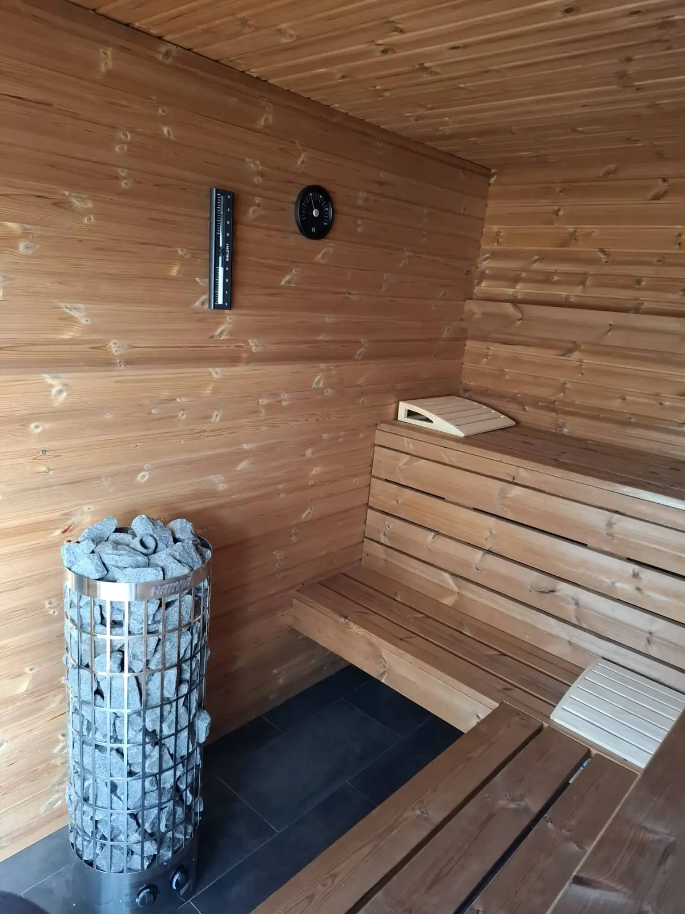
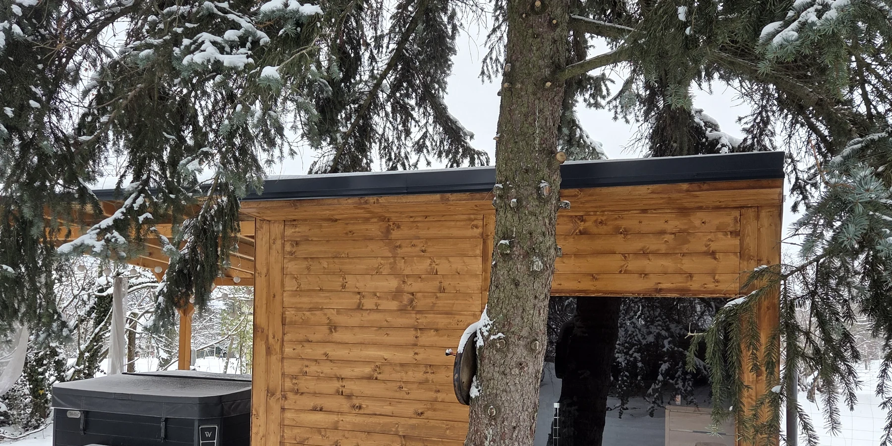
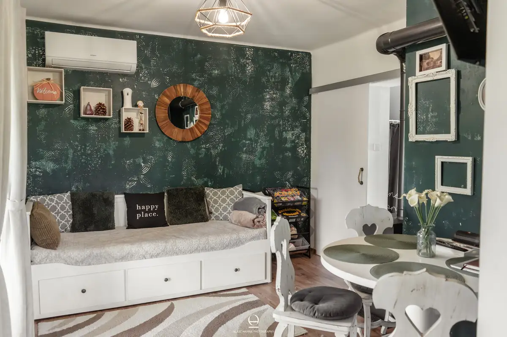
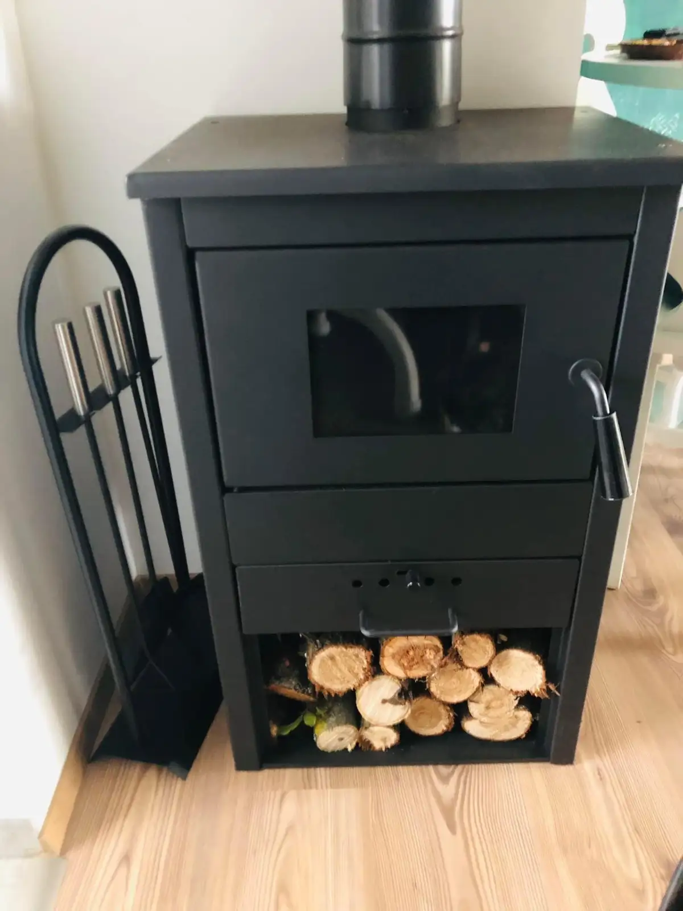
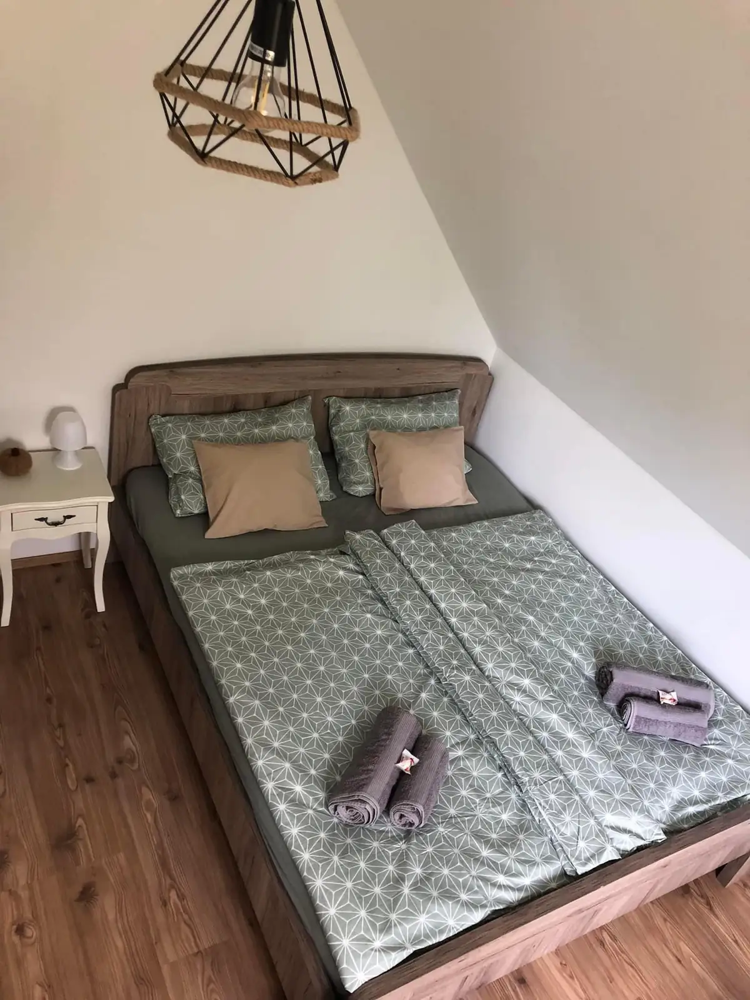
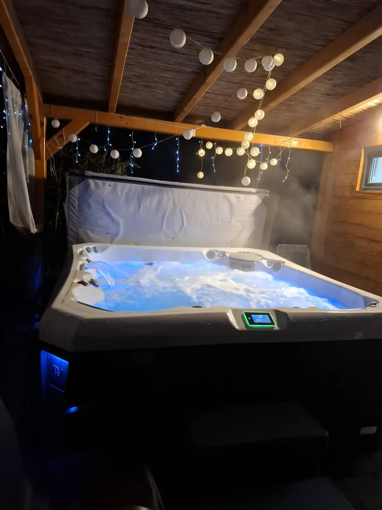

Finn szauna
Fából épült szaunaház a kertben, fapadokkal és kályhával. Csak a ti társaságotok használja.

Teljes ház legfeljebb 8 főnek Pécstől 5 km-re, a Mecsekre néző domboldalon. Privát jakuzzi egész évben, finn szauna, kandalló.

Hatalmas fenyők és cédrusok, csend és madárhang a gyódi domboldalon. A házat és a kertet egészben kapod meg, más vendég nincs.
A két hálószobában és a nappali kihúzható kanapéján legfeljebb 8 fő alszik. Egy fürdőszoba, külön konyha, klíma, Wi-Fi és Netflix. Kutyát, macskát is hozhatsz, a ház baba- és gyerekbarát.
Minden szoba A ház oldalon


Mindkettő a házhoz tartozik, más vendéggel nem osztozol rajta.

Fából épült szaunaház a kertben, fapadokkal és kályhával. Csak a ti társaságotok használja.

Legfeljebb 6 fő fér bele. Egész évben bármikor használható, télen is meleg a víz.
9,8
19 értékelés alapján
szallas.hu
„Minden a praktikusság és a minőség jegyében lett kialakítva”


1400 négyzetméter, csak a tiétek. Hinta kilátással a Mecsekre, bogrács és sütögetés, ping-pong és csocsó. Az autóknak 4 zárt, ingyenes parkolóhely jut.
Mintaadat, a valódi foglaltság hamarosan
Szabad éjszakaFoglalt éjszaka
Teljes naptár és érdeklődés